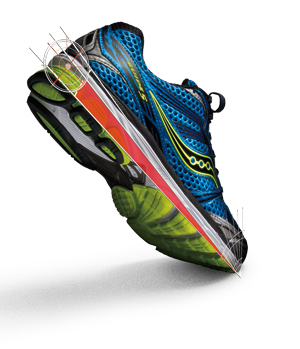

Runningspecialist Saucony neemt een grote stap met een kleine verandering. De gemiddelde runningschoen heeft een hoogteverschil in de tussenzool van 12mm tussen hiel en voorvoet (=offset). Door de hiel te verlagen en de voorvoet te verhogen heeft Saucony dit teruggebracht naar 8mm, zonder dat dit ten koste gaat van de demping. Sterker nog, uitgebreide tests in het Saucony Lab hebben uitgewezen dat het verlagen van de offset (het hoogteverschil van hak naar voorvoet) een flink aantal voordelen biedt.
In hun meest recente nieuwsbrief kan je nog meer informatie terugvinden: www.saucony.eu